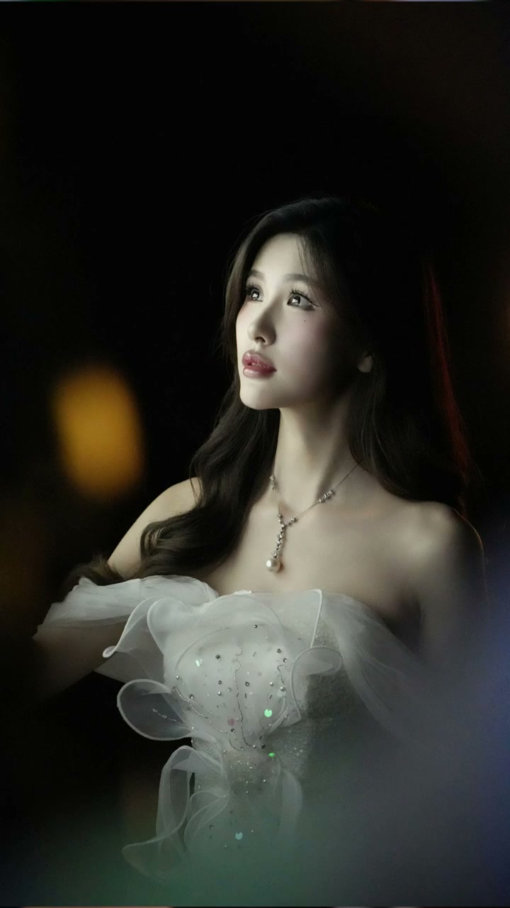
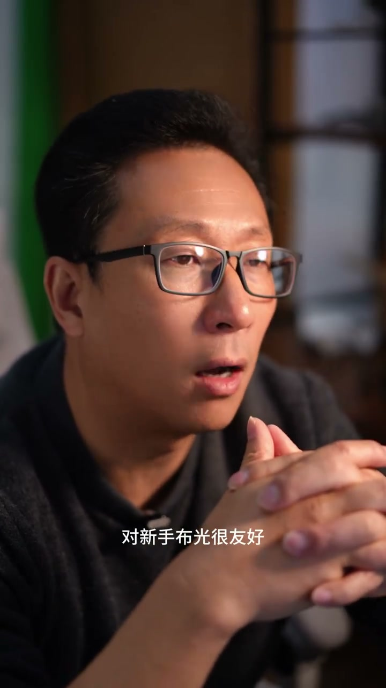
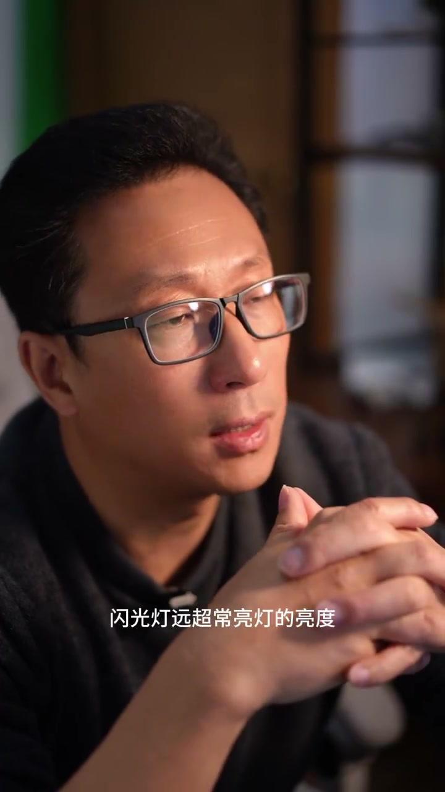
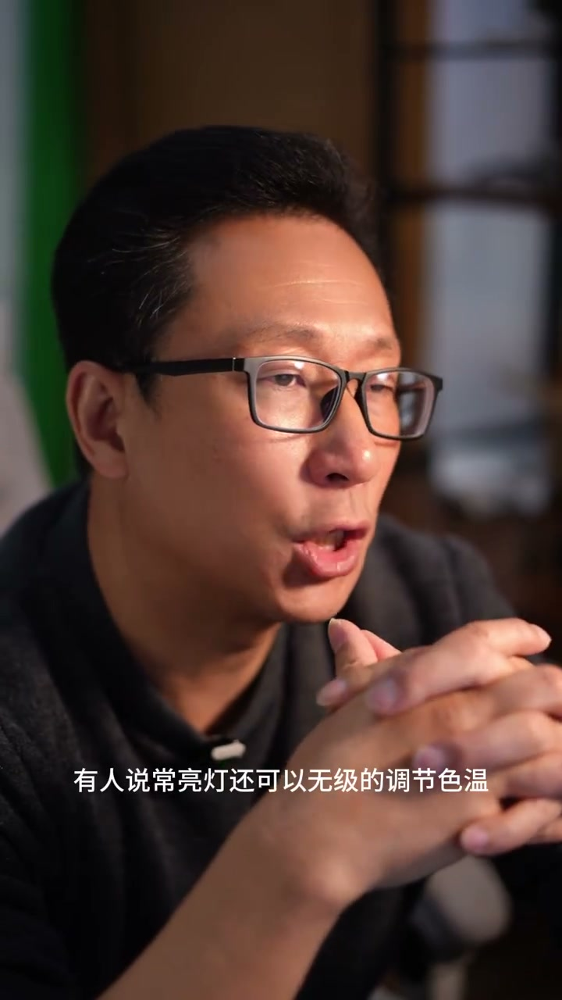

内容要点
[00:00] 其实闪光灯和长亮灯完全是两个级别的产品
[00:03] 我们平时用的基顶灯
[00:05] 如果换算成相同的亮度
[00:07] 差不多相当于一万瓦以上的长亮灯
[00:11] 所以是闪光灯在亮度上完全可以秒示长亮灯
[00:15] 那么我们应该怎么选择亮度的灯呢
[00:17] 灯的亮度输出基本上遵循着
[00:20] 预强折强预弱折弱的原则
[00:23] 大体上就是灯的亮度和你要拍摄的环境
[00:27] 亮度在一个数量级上
[00:29] 所以说夜景里面一个小小的补光灯就够了
[00:32] 室内、阴天或者是树影底下都可以用小公寓的灯
[00:37] 长亮灯也可以在这些环境下使用
[00:40] 但是如果是外景阳光
[00:42] 那么唯一的选择就只有闪光灯了
[00:45] 长亮灯的优势是锁建技术的
[00:48] 对新手补光很友好
[00:50] 还有如果是视频拍摄
[00:52] 长亮灯是唯一的选择
[00:54] 但在摄影中
[00:55] 长亮灯除了锁建技术折折的一个优点之外
[00:59] 其他几乎都是闪光灯的优势了
[01:03] 闪光灯远超长亮灯的亮度
[01:05] 使它可以加各种光智附件
[01:08] 比如大型的深拋、柔光箱等等
[01:11] 这些附件本身对光亮度有很大的削减
[01:15] 所以说长亮灯常常因为亮度不够
[01:18] 不太好用这些附件
[01:19] 另外闪光灯还有一个瞬间凝固性的特点
[01:23] 所以说你再用闪光灯拍出的照片
[01:26] 锐度和质感都会更好
[01:28] 而且不太容易发虚
[01:31] 但是闪光灯的学习确实有点门槛
[01:34] 跨不过去你就会觉得用灯很难受
[01:37] 还不如自然光拍的
[01:39] 让你慢慢的放弃用灯
[01:40] 但你一旦过了这个门槛
[01:43] 玩灯可能是摄影里面最大的乐趣
[01:46] 如果你会深入的学习摄影
[01:48] 那么驾驭闪光灯一定是你不可回避的一个课题
[01:52] 有人说长亮灯还可以无极的调节摄温
[01:55] 其实闪光灯加上绿色纸也可以调摄温
[01:59] 但确实没有长亮灯具备冷暖两个灯珠
[02:02] 通过比例的混合无极调节摄温更方便
[02:07] 不过我有一个可以实现闪光灯远程
[02:10] 在影闪器上无极调节摄温的方法
[02:14] 下次我们讲闪光灯时候分享给大家



